Diagrammer une architecture AWS complexe : Pluralith (Terraform) vs Cloudcraft (scan IAM live)
18 Août 2026, 15:30 CEST
DevOpsDeux méthodes testées sur une vraie stack EKS multi-tenant : la CLI locale branchée sur Terraform, et le scan live via un rôle IAM — usage, FinOps et matrice de risque
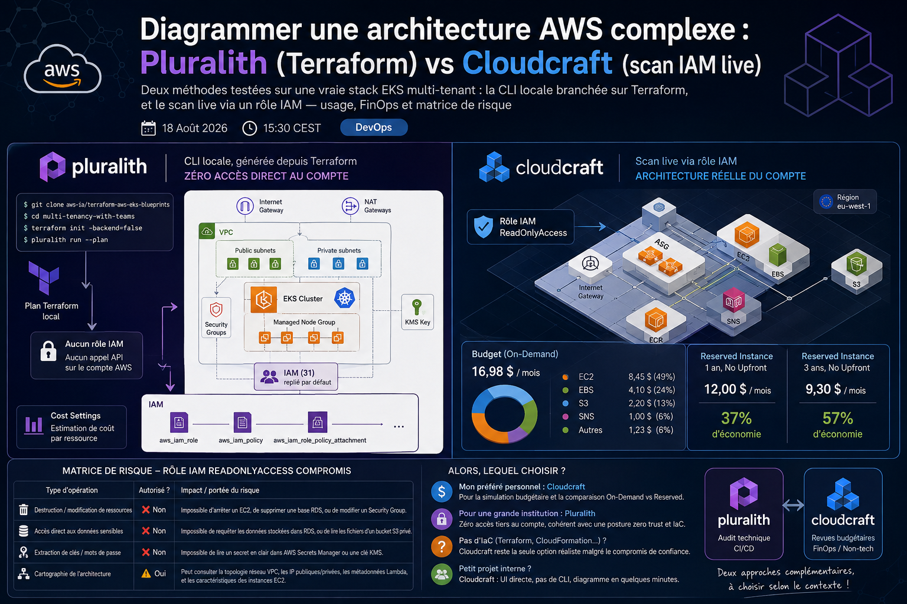
Le problème : une architecture AWS devient vite illisible
Dès qu'un compte AWS dépasse quelques ressources — VPC multi-AZ, EKS multi-tenant, IAM à tiroirs, S3/RDS/Lambda éparpillés — les schémas dessinés à la main deviennent obsolètes en quelques semaines. J'ai voulu tester deux approches concrètes pour générer un diagramme d'architecture à jour et automatiquement, sur un cas réel : le pattern multi-tenancy-with-teams du repo officiel aws-ia/terraform-aws-eks-blueprints — un cluster EKS avec une équipe admin et deux équipes dev isolées par namespace.
Les deux outils testés partent d'une philosophie radicalement différente : Pluralith lit votre code Terraform en local et ne touche jamais votre compte AWS en direct, tandis que Cloudcraft se connecte à votre compte via un rôle IAM et scanne les ressources réellement déployées. Voici le déroulé complet, image par image.
Méthode 1 — Pluralith : CLI locale, générée depuis Terraform, zéro accès direct au compte
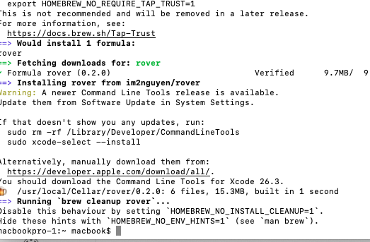
Premier réflexe : équiper le terminal. Avant de fixer mon choix sur Pluralith, j'ai regardé les alternatives CLI de visualisation Terraform disponibles via Homebrew (comme rover) — l'idée étant de trouver l'outil qui génère un diagramme sans jamais exposer les identifiants du compte AWS à un tiers.
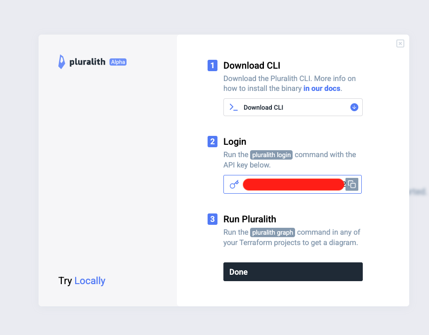
L'onboarding Pluralith tient en trois étapes : télécharger la CLI, s'authentifier avec une clé API personnelle (pluralith login), puis lancer pluralith graph dans n'importe quel projet Terraform. Aucun rôle IAM à créer côté AWS pour ce flux — Pluralith n'a besoin que de ce que Terraform lui-même peut lire.
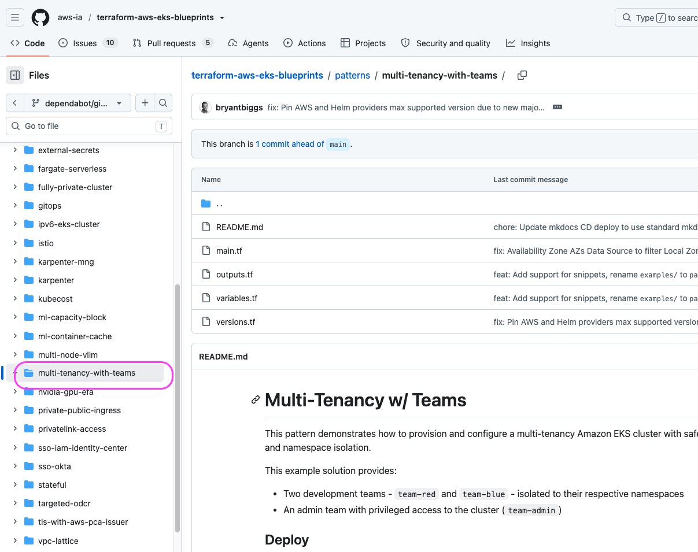
Comme terrain de test, j'ai choisi un pattern public et représentatif d'une vraie plateforme d'entreprise : multi-tenancy-with-teams, qui provisionne un VPC, un cluster EKS et deux équipes dev isolées (team-red, team-blue) plus une équipe admin — largement assez complexe pour valider l'outil sur un cas réaliste plutôt qu'un "hello world".
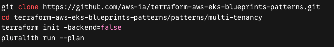
Le workflow complet tient en quatre commandes : git clone du repo, cd dans le pattern, terraform init -backend=false, puis pluralith run --plan. Tout le diagramme est reconstruit à partir du plan Terraform local — pas d'appel API de scan sur le compte, pas de rôle IAM permanent à maintenir.
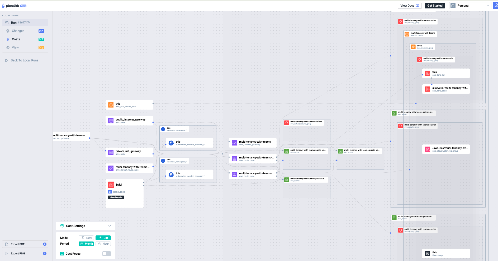
Résultat : un diagramme interactif complet — cluster EKS, node group, security groups, subnets publics/privés, clé KMS de chiffrement du cluster, passerelles NAT/Internet, et un bloc IAM regroupant 31 ressources repliées par défaut pour ne pas noyer la vue d'ensemble. Un panneau Cost Settings est même disponible pour superposer une estimation de coût par ressource.
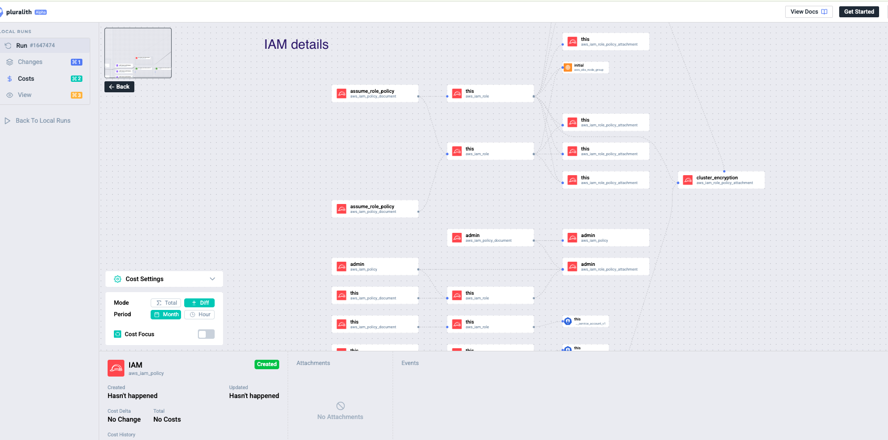
En cliquant sur le bloc IAM, on descend jusqu'au détail : chaque aws_iam_role, aws_iam_policy et aws_iam_role_policy_attachment apparaît, avec ses liens de dépendance. C'est le point fort de l'approche Terraform-first : on peut auditer visuellement toute la chaîne de permissions sans jamais interroger le compte AWS en direct — tout vient du plan local.
Limite honnête de cette approche : si votre organisation ne fait pas d'Infrastructure as Code (ressources créées à la main dans la console, ou via un autre outil non-Terraform), Pluralith n'a tout simplement rien à lire — l'outil perd son intérêt.
Méthode 2 — Cloudcraft : scan live via rôle IAM, UI très visuelle, fort en FinOps
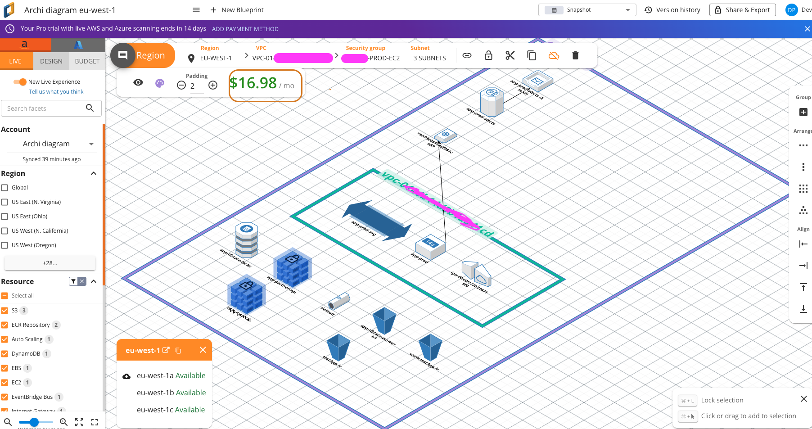
Deuxième approche : Cloudcraft, qui demande cette fois un rôle IAM en lecture seule (ReadOnlyAccess) sur le compte pour scanner en direct les ressources réellement déployées. Le résultat est un diagramme isométrique très lisible de la région eu-west-1 — ASG, EC2, S3, ECR, Internet Gateway, tout est découvert automatiquement, sans écrire une ligne de code. C'est nettement plus straightforward pour un projet interne de taille modeste où personne n'a le temps de maintenir un mapping Terraform-diagramme.
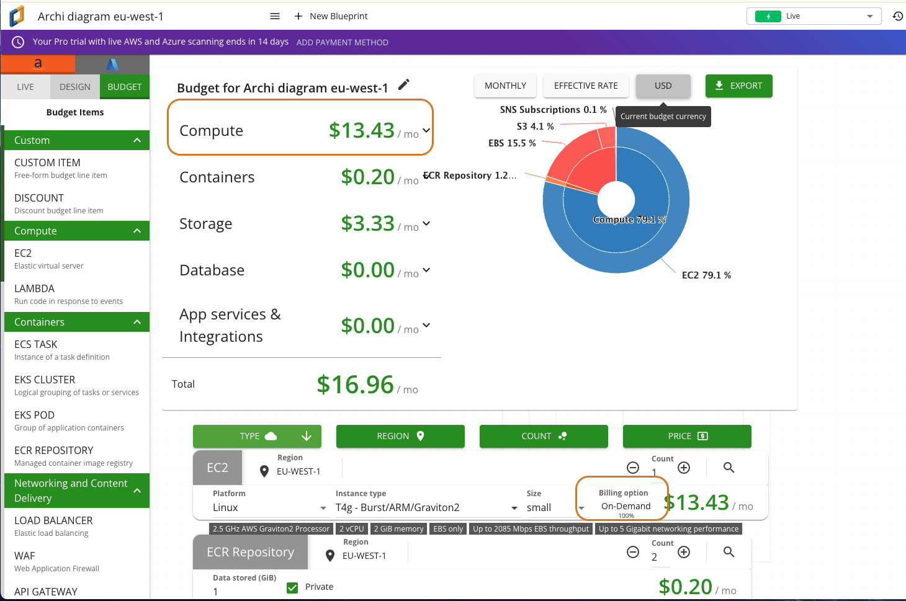
Là où Cloudcraft devient vraiment intéressant, c'est l'onglet Budget : le coût mensuel réel est ventilé par service (EC2, EBS, S3, SNS) directement sur le diagramme scanné, en tarification On-Demand — ici 16,98 $/mois pour ce petit environnement.
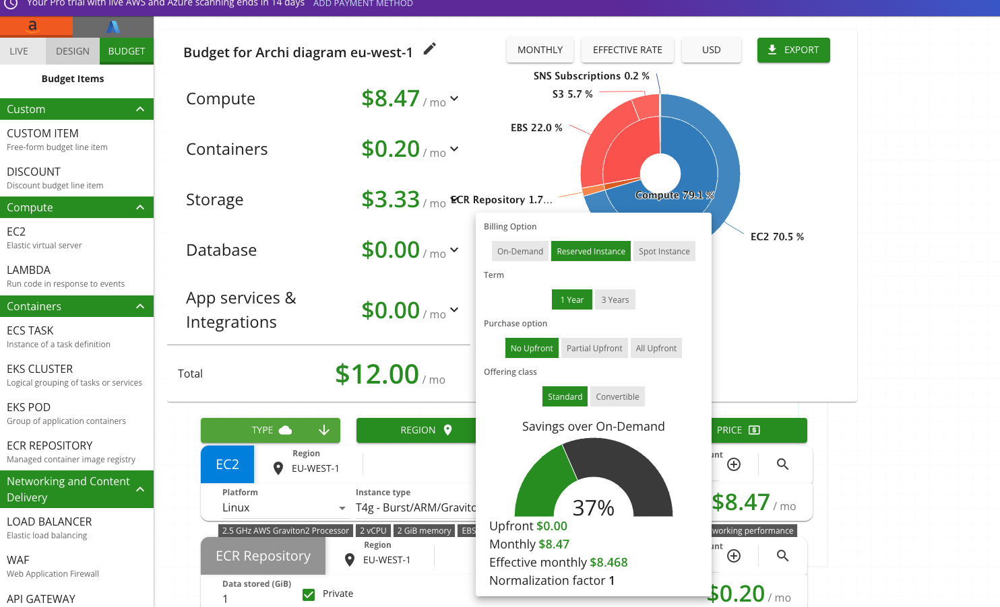
En basculant l'option de facturation sur Reserved Instance, 1 an, No Upfront, le total tombe à 12,00 $/mois, soit 37 % d'économie affichée instantanément — sans toucher à la facturation réelle AWS. C'est une vraie simulation FinOps en quelques clics.
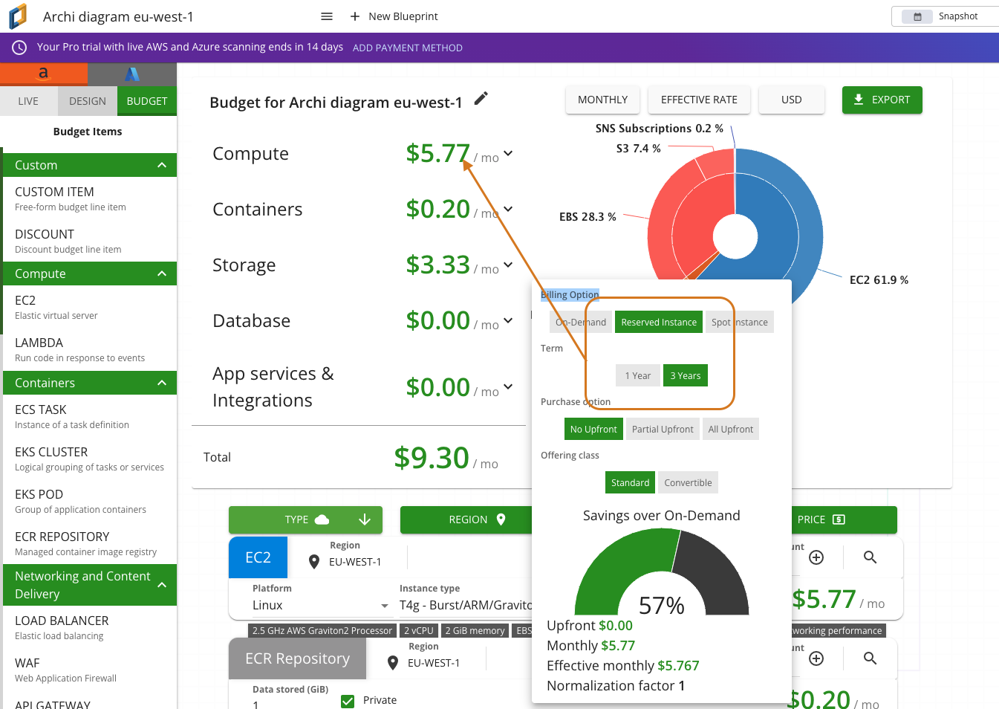
En poussant sur un engagement 3 ans, No Upfront, le total descend à 9,30 $/mois, soit 57 % d'économie. Pouvoir comparer On-Demand vs Reserved 1 an vs Reserved 3 ans en trois clics, directement sur le diagramme réel du compte, est à mon sens la fonctionnalité la plus utile de Cloudcraft pour de l'optimisation budgétaire (FinOps).
Le vrai sujet : le risque du rôle IAM donné à un tiers
Cloudcraft ayant été racheté par Datadog, on peut raisonnablement estimer que la posture de sécurité de l'infrastructure est sérieuse. Mais le principe zero trust impose de raisonner indépendamment de la réputation du fournisseur : le rôle ReadOnlyAccess donné à Cloudcraft est un accès permanent, tiers, à mon compte AWS. Il faut évaluer ce que ce rôle permet réellement — et surtout ce qu'il ne permet pas.
L'attaquant qui compromettrait ce rôle (ou Cloudcraft lui-même) ne pourrait pas modifier, créer ou supprimer la moindre ressource dans mon compte AWS. Mais si Cloudcraft (aujourd'hui propriété de Datadog) était lui-même compromis, l'attaquant pourrait consulter la topologie de mon architecture et les métadonnées de configuration.
| Type d'opération | Autorisé ? | Impact / portée du risque |
|---|---|---|
| Destruction / modification de ressources | ❌ Non | Impossible d'arrêter un EC2, de supprimer une base RDS, ou de modifier un Security Group. |
| Accès direct aux données sensibles | ❌ Non | Impossible de requêter les données stockées dans RDS, ou de lire les fichiers d'un bucket S3 privé. |
| Extraction de clés / mots de passe | ❌ Non | Impossible de lire un secret en clair dans AWS Secrets Manager ou une clé KMS. |
| Cartographie de l'architecture | ⚠️ Oui | Peut consulter la topologie réseau VPC, les IP publiques/privées, les métadonnées Lambda, et les caractéristiques des instances EC2. |
En clair : un rôle ReadOnlyAccess compromis n'ouvre pas la porte à un incident de disponibilité ou d'exfiltration de données — mais il donne un plan détaillé de votre réseau à un attaquant, ce qui facilite grandement la reconnaissance pour une attaque ultérieure. Ce n'est pas un risque nul, c'est un risque de reconnaissance, à mettre en balance avec le confort d'usage.
Alors, lequel choisir ?
Mon choix dépend entièrement du contexte :
- Mon préféré personnel : Cloudcraft — spécifiquement pour la simulation budgétaire. Pouvoir comparer On-Demand vs Reserved 1 an vs 3 ans en direct sur un diagramme réel est un vrai levier de FinOps, difficile à égaler.
- Pour une grande institution : Pluralith — parce qu'il tourne directement sur le plan Terraform, sans jamais poser de rôle IAM permanent tiers dans le compte. C'est l'option cohérente avec une posture zero trust et une gouvernance IaC stricte.
- Mais attention : si votre organisation ne pratique pas l'Infrastructure as Code (Terraform, CloudFormation, Pulumi...), Pluralith n'a rien à analyser — dans ce cas, un outil de scan live comme Cloudcraft reste la seule option réaliste, malgré le compromis de confiance qu'il implique.
- Pour un petit projet interne sans exigence de conformité forte, l'UI directe de Cloudcraft (pas de CLI, pas de Terraform à connaître) reste la voie la plus straightforward pour obtenir un diagramme utilisable en quelques minutes.
Les deux outils ne s'excluent d'ailleurs pas : Pluralith pour l'audit technique et la CI/CD, Cloudcraft pour les revues budgétaires avec des interlocuteurs non-techniques (finance, direction).